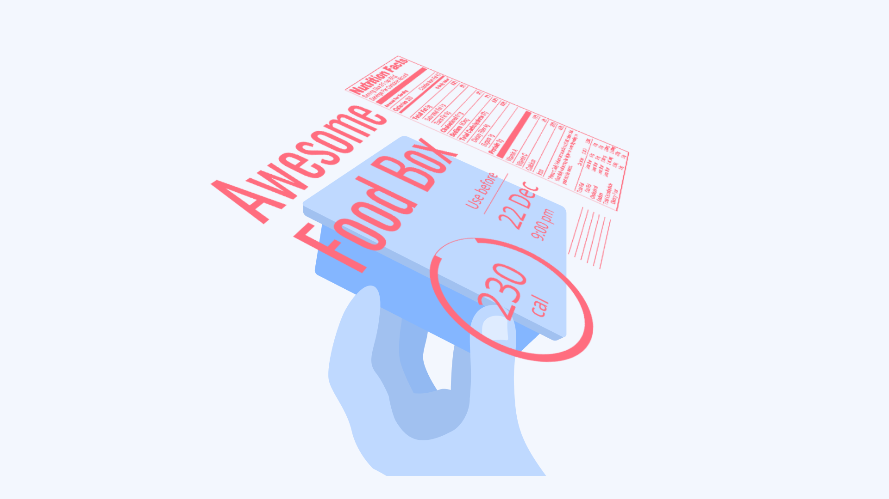
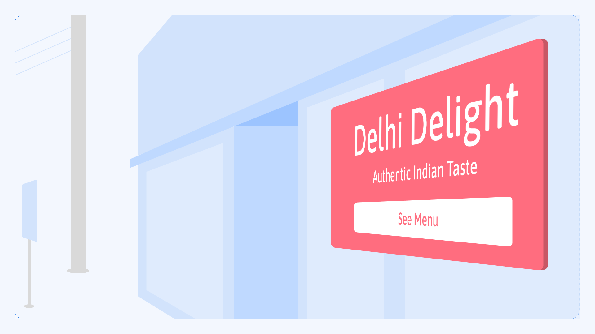
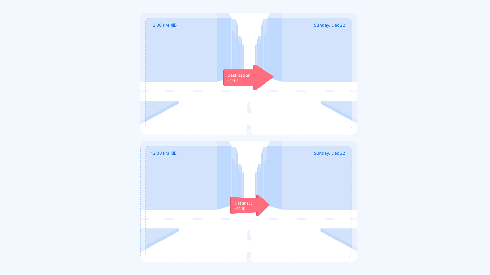

Spatial classification of typography in AR/VR
By Niteesh Yadav · Google Fonts Knowledge.
Reviewed by Andrew Johnson, Gerry Leonidas.
Original article · Source on GitHub · CC BY-SA 4.0. Text, illustrations and existing credits reproduced from the licensed Knowledge repository. Open Shelf adapted the layout and links; these adaptations are also CC BY-SA 4.0. No endorsement implied.
Let’s group some of the concepts we’ve discussed in previous articles from this module into spatial classifications. This can help with considerations for choosing typefaces, setting text, and even designing typefaces for different applications. This classification may also help with picking the most appropriate rendering methods (see “Designing for AR/VR”) for displaying text in AR/VR experiences.
For example, text belonging to the “Text in HUD” category remains fixed in size, so the standard textures of each size can be used without a loss in resolution as people move closer to the text. On the other hand, text in the “Sticky info text” category requires a higher resolution, since people have control over their distance from the text and can move toward or away from it. This classification can also help with exploring the application of variable fonts across different cases (again, for more, see “Designing for AR/VR”).
| Type of text: | Position: | Viewing angle: | Text state: | User’s state: | Examples: |
|---|---|---|---|---|---|
| “Text in HUD” | HUD region | Fixed | Stationary, moving | Still, moving | Time, notifications, text updates, music track name |
| “Text for long reading” | UI/interaction region | Fixed, variable | Stationary | Still | Descriptions, articles, long-form reading |
| “Sticky info text” | UI/interaction region | Variable | Stationary | Still | Info over real-world objects |
| “Signage text” | Environment region | Variable | Stationary | Still, moving | Signages, billboards |
| “Responsive text” | UI/interaction region, environment region | Variable | Stationary, moving | Still, moving | Navigation markers, responsive ads |
| “Ticker text” | HUD region, environment region | Fixed, variable | Moving | Still, moving | News, long-running info, ads |
Text in HUD
In this case, text sticks to the field of the view and moves with head movement.

Text for long reading
Text should, ideally, be placed in the UI region for a better reading experience within the range of five meters. This allows people to move text in order to optimize the distance based on their reading preferences.
Sticky info text
Text that’s anchored to real-world objects (usually in a close range—up to a few meters away from the subject) has a fixed orientation. It may change position and direction based on how people interact with the real-world object the text is anchored to.

Signage text
Similar to the sticky info text, this is anchored to real-world objects, but in this case the user can’t move or change the orientation of the object. The information is anchored to macro-level objects such as geo-location, buildings, and vehicles.

Responsive text
This can be placed in both UI and environment regions where the text changes its orientation (perspective) based on peoples’ movements or specific programmed behaviors, as shown below.

Ticker text
The term “ticker” comes from news tickers: an element with moving text that’s secondary to the main environment or task the user performs. This is a useful method to attract attention and show more information in a small area, such as notifications in HUD, or showing information in supermarkets.

Useful links: - Future of Typography in Augmented Reality - Typography Classification in Augmented Reality v1.1